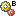

BOM Comparison¶
The comparison operation for BOMs is intended to give users a quick and detailed overview about the differences of the BOMs of selected assemblies.
Right click the selected part and select Structure Comparison in the pop-up menu. The selected part will be entered automatically outgoing Assembly A in the entry window for the BOM comparison. Here, you must select the Assembly B using the catalog. For Assembly B, the browser is based on the part managed in your system. The Display equal items check box is useful for increasing clarity, where necessary, by hiding the identical items. The number of assembly levels that are to be compared are configured using the Comparison Depth.
The result of the BOM comparison is displayed graphically in the structure view. The starting data for the comparison appears in the upper area of the structure tree. The comparison results are displayed graphically in the middle area. During this process, the BOM items of Assembly A are compared to those of Assembly B. The comparison result is symbolized by the preset icon. Attribute values deviating from each other are displayed under the BOM item in question based on the attribute and the values deviating from one another. The bottom area includes the representation of the comparison in table form. Here, the BOM items from the (sub)assemblies up to the individual components can be navigated using the individual objects in the result list.
Meaning of the icons for results view for the BOM comparison
- Icon for the BOM comparison
Icon in front of the assemblies to be compared.
- Icon “only available in BOM A”
The item is only available in A.
-  Icon “only available in BOM B”
The item is only available in B.
 Icon “Part difference”
Icon “Part difference”The items differ by a part.
- Icon “Version difference”
The items differ by a part version.
- Icon “Attribute difference”
The items differ in the values of the item attributes.
- Icon “Completely different”
The items differ completely.
 Icon “Identical item”
Icon “Identical item”The items of both BOMs are identical.
Attributes to be compared in the BOM comparison
During the BOM comparison, the attributes of the respective BOM items compared as Assemblies A and B are of importance. These are primarily the attributes that uniquely label the objects to be compared and, therefore, form the key for identifying the BOM components. By default, these are the Assembly No., Assembly index, Component No., Component index and the BOM item. Furthermore, all other describing attributes for the BOM items as well as attributes from the part classified by the BOM item can be included for the comparison.
Assembly No. and/or assembly index will differ from each other in a normal case since the actual objective is to compare different assemblies.
The comparison begins with the component number and the component index which are compared for the same BOM item. If these are the same, the other BOM item attributes like amount and length are compared in greater depth. These attributes are included in the default configuration as an example for the BOM comparison and must be adapted for the specific application and, where necessary, for the customer-specific application.
Searching and comparing equal components with different item entries does not usually make sense because components could have been used in different items deliberately and comparison entries are not very helpful. Therefore, multiple usages in different items are also not treated differently during a BOM comparison.
The BOM items of two assemblies can also differ by their actual part attributes. This means that for identical items with different components, the attributes of the part in question can also become relevant to comparison along with the BOM item attributes. This type of BOM comparison must be configured in a customer-specific manner based on their specific requirements.
Each of the comparison results are represented by the Icons described above.